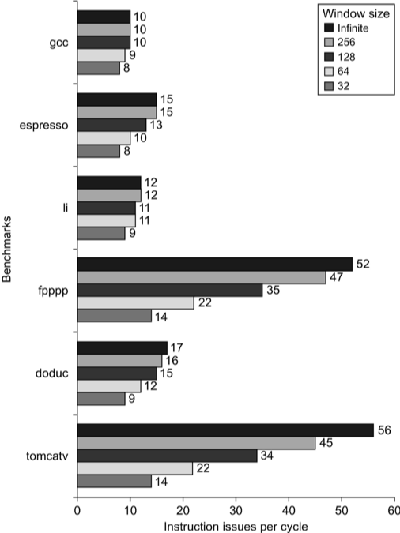
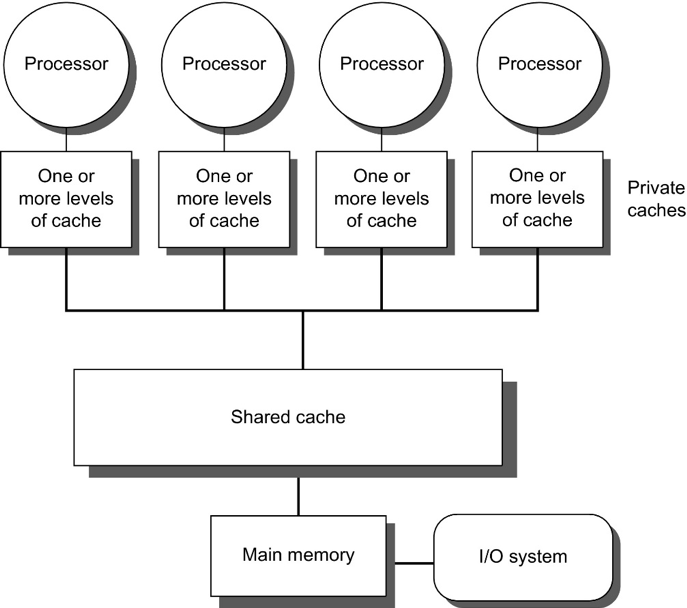
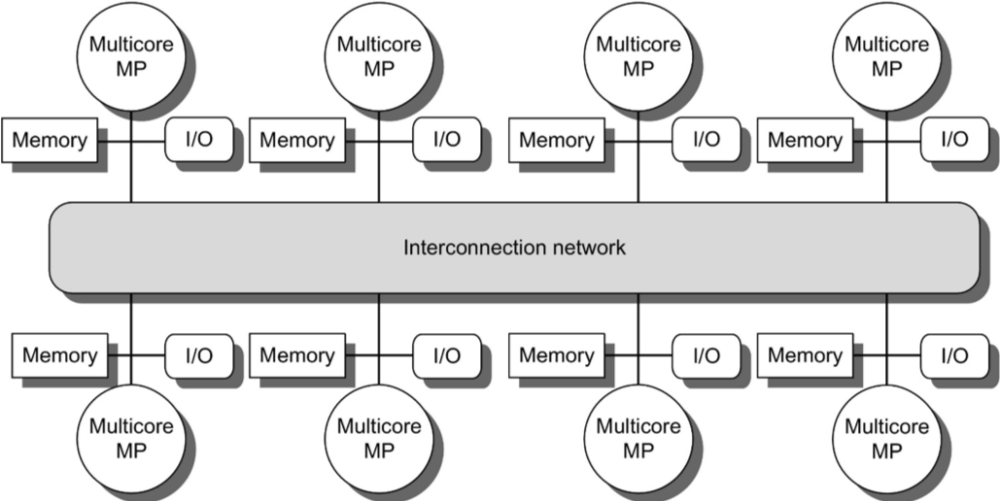

CIS 451 Week 10
More superscalar challenges
Branch Prediction becomes critical
- Branch-Target Buffer maps PC to expected next instruction
- Does this even before the instruction is decoded
- Typically only “taken” branches are stored
- If PC not in BTB, then just move on
- Can improve performance even more if target instruction is stored.
- Can make jumps take 0 cycles!
- Indirect jumps can be difficult to predict
- function pointers
- Virtual functions in C++?
- return values (
jr $rain MIPS) - return values are the majority of indirect jumps
- accuracy on return values can be as low as 60% for some programs
- Range is 20% to 60% on SPECint 95
- Solution: Keep a stack of return values in the CPU
- In most cases, this is 100% accurate
Hyperthreading:
- Run two threads through same core to try and keep functional units full
- What hardware needs to be duplicated?
- Registers
- Including PC, status flags, etc
- Registers
- What hardware can be shared?
- What types of program benefit from this?
- Which ones don’t?
i7 Improvements over time

- Mostly from better branch prediction and cache hit rates
- Aggressive prefetching detracts from performance in some cases.
Fallacies and Pitfalls (From Chapter 3)
- Sometimes bigger and dumber is better
- Sometimes smarter is better
- Fallacy: There is a lot of ILP available if we can only find it.
- 
- Study from David Wall in 1993 assuming generous resources
- Not believed by industry for many years: They kept trying to “find” more ILP, but performance gains were modest.
- I wonder if this is a case where ILP was the best “tools” were, so they kept pushing despite evidence to the contrary. (Government does this all the time.)
- Peak of attempts to leverage ILP was around 2000.
- By 2005 focus shifted to multicore.
- Notice that the shift to multi-core happened ahead of good tooling for writing programs that can leverage
multicore. (My Opinion)
- Intel grants in mid-2000s
- Also focus on SIMD (both vector processing and GPUs.)
Shared Memory Multiprocessors
A few terms
- Multiprocessor: Many processors working together
- Multicore: A multiprocessor where all the processors are on the same chip
- Grain size: The amount of computation assigned to a thread.
- Fine grain: Many short tasks farmed out to threads (Think GPUs)
- Coarse grain: A few threads that last a long time (Think typical multi-threaded programs)
- Fine grain has the potential to exploit more parallelism; but, high overhead of setting up thread can limit benefit.
- SMP: symmetric multiprocessor
- Almost everything is identical.
- All share access to same memory
- Typical for small # processors / cores (currently 32 or less)
- Most (but not all) multicore processors are SMPs
- Also called UMA: Uniform Memory Access
- Show slide below
- NUCA Non-uniform Cache Access.
- Distributed L3 cache.
- Not typical. (IBM Power8)
- DSM: Distributed Shared Memory
- Typically groups of multicore chips: Cores see uniform access; but, memory distributed to different chips
- Trying to connect memory equally to large number of chips causes a bottleneck.
- Also called NUMA (Non-uniform memory access)
- In all cases memory is shared (same address space)
- Contrast this to clusters of independent machines that communicate by passing messages.
- Note: Not every address is shared
- Contrast “shared memory” with “message passing”
 
Review of high level model
- Several cores on same chip
- Each core has its own L1 and L2 cache
- All share L3 cache and main memory
- Threads run as independently as possible; but, when they need to coordinate (e.g., synchronize or share data), they place information in a memory address that all threads are watching.
- Key challenge: When
P1writes to addressloc, thenP2reads fromloc, it needs to know if it can use the value in its L1/L2 cache, or if it has to fetch updated data from L3 or main memory
Given that updates to a memory location can’t be propagated instantly, we must consider two key issues
Coherence and Consistency
Coherence vs. Consistency
- Coherent: Which values may be returned by a read
- (Think “logical” / “common sense”)
- Consistency: When written values are applied
A memory system is coherent if
- On a given processor: Write of
dtoloc, followed by a read oflocWhat should happen?- returns
d(unless another write intervenes)
- returns
- Between processors: Write of
dtolocbyP1followed by read ofloconP2What should happen?- returns
dif enough time has passed (unless there are intervening writes).
- returns
- Suppose both P1 and P2 write to
locat about the same time. What should happen?- Writes to the same location are serialized: All processors see the same write order.
- This is true even if the writes are made by different processors.
- called write serialization
Consistency:
- It is not reasonable to expect writes to be visible everywhere immediately.
-
Consistency is when the write is visible.
- Performance requires data migrate into a local cache. (i.e., keeping shared data in Main memory and/or L3 is not an option.)
- Need a way of updating data stored locally in caches
- Directory based – Single source of truth for who has what data
- Is often a bottleneck, unless distributed.
- Distributed directories are complex.
- Snooping – Everybody keeps his own copy
- Snoop the common data bus to keep his copy up-to-date
- Directory based – Single source of truth for who has what data
Snooping
- Either “Write Invalidate” or “Write update”
- “Write Invalidate” protocol most common.
- Caches watch traffic on shared memory bus and decide what data is valid or invalid (i.e., safe to use, or needs to be re-fetched from L3 or main memory.)
- When write goes by, if that value is cached, invalidate that cache element (next read needs to be a miss)
- If two writes happen at the same time, whichever write gets the bus
first “wins”. Other write is invalidated and must start again.
- Notice how this serializes writes as required by coherence
- Example:
- A reads X
- B reads X
- A writes X, sends invalidation message
- When B reads X, it must be a cache miss, which re-fectches the data.
- Notice that A can write to X multiple times without causing bus traffic.
- Write Update / Write Broadcast
- Instead of invalidating cache, update other caches.
- i.e., every write is broadcast (“shouted” to all other nodes)
- In contrast, write invalidate can keep write local to L1/L2
until either data is evicted, or another node needs data
- Write Broadcast Tends to use too much bandwidth
- Notice that an invalidate message need only contain address. It need not contain all the data.
- Instead of invalidating cache, update other caches.
- Write through vs. write back
- Write through is “easy”. Cache misses served by Memory / L3
- Write back more challenging: Owner of “dirty” block must also snoop the bus and respond when read request for “their” block is seen.
- You can see here why write Update can be expensive with a write back cache
- What is the main tradeoff for write through vs. write back
- Memory bandwidth vs. access time
- Broadcasting an address on every write can take up bandwidth.
- Not necessary if no other caches hold that data.
- Blocks are, by default assumed to be shared.
- Upon a write,
- send an invalidation request (marks other blocks as invalid)
- Mark the block as Modified (which implies exclusive)
- This is just another bit in the cache similar to the invalid bit.
- Snoop for other reads to this value. If seen, switch back to “shared” from exclusive.
- Basic protocol MSI (Modified, Shared, Invalid)
- The “Modified” state is called “exclusive” in textbook.
- Protocol is somewhat simple, but only if operations are atomic
- Extensions:
- MESI Add “exclusive” state
- E (“exclusive”) means resident in one cache only.
- If a cache issues a read, and no other caches respond, then placed in “E” state
- If some other cache responds, then place in “S” state
- What is the benefit?
- No need for an invalidate on write
- Changed to “S” if somebody else reads
- What is the “cost” relative to MSI?
- On a read, if all caches with a copy of the data reply, the bus can get crowded
- https://en.wikipedia.org/wiki/MESI_protocol
- E (“exclusive”) means resident in one cache only.
- i7 uses a variant of MESI called “MESIF”
- F stands for “forward” and provides a hint of who will handle a read request so the bus doesn’t get overloaded.
- MOESI: Add “Owned” state
- Blocks in the owned state are shared and dirty.
- The owned state reduces the number of writes back to main memory.
- “Owner” of a block is responsible for
- Satisfying read requests (since it is the only block guaranteed to be up-to-date)
- Updating main memory when necessary.
- AMD Opterons use MOESI
- MESI Add “exclusive” state
Directory
- Main limitation of Snoopy caches?
- Bus bandwidth
- Once a multiprocessor grows large enough, snooping traffic can cause a burden on the individual caches that now must pay attention to every message.
- Also, at some point all the cores together generate more traffic than any one bus can handle effectively. Thus,
hierarchies emerge (e.g., 4-8 cores on a chip sharing one L3 and one Memory, with several chips.)
- We don’t want to unnecessarily send traffic to all other cores.
- At this point, a Directory system becomes necessary:
- Pay attention to who all has shared copies of the data, and target the messages there.
- In general, directories need to be distributed.
- Directory keeps track of
- Shared
- Uncached
- Modified
- Which processors have a shared copy
- Protocol effectively identical to MSI.
- Sample organization: Use a directory to direct traffic to L3 cache of specific chips, use Snoopy cache on-chip between those cores.